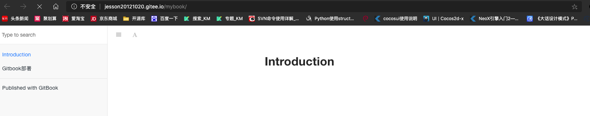

GitBook 基本使用
起因
由于自己平时记录的学习笔记的比较零散, 没有系统的整理，不方便查看搜索, 所以这里采用GitBook来记录。
安装
gitbook 的安装非常简单，详细指南可以参考 gitbook官方文档。
npm install gitbook-cli -g
需要注意的是：用户首先需要安装 nodejs，以便能够使用 npm 来安装 gitbook。
书籍创建
选择一个空目录MyBook, 并执行以下指令即可初始化一本书
cd MyBook
git init
gitbook init
创建完成后的目录结构如下
jessons-Mac:MyBook jesson$ tree
.
├── README.md
└── SUMMARY.md
0 directories, 2 files
书籍预览
使用gitbook serve指令，编译书籍，并开启web服务
jessons-Mac:MyBook jesson$ gitbook serve
Live reload server started on port: 35729
Press CTRL+C to quit ...
info: 7 plugins are installed
info: loading plugin "livereload"... OK
info: loading plugin "highlight"... OK
info: loading plugin "search"... OK
info: loading plugin "lunr"... OK
info: loading plugin "sharing"... OK
info: loading plugin "fontsettings"... OK
info: loading plugin "theme-default"... OK
info: found 1 pages
info: found 0 asset files
info: >> generation finished with success in 0.2s !
Starting server ...
Serving book on http://localhost:4000
使用浏览器打开地址http://localhost:4000

gitbook serve指令会先调用gitbook build指令，在当前目录生成_book目录，用于存储编译好的静态网页
书籍保存
这里选择Gitee作为存储平台， 使用Github也是一样的。
1. 创建书籍仓库

2. 上传书籍
使用git将MyBook目录下的书籍上传到刚创建的MyBook仓库master分支中
git remote add origin https://gitee.com/jesson20121020/MyBook.git
git add .
git push origin master

书籍部署
由于GitBook可以发布成静态网页，我们可以利用这个特性，方便的将我们的书籍部署到自己的服务器上，或者利用github/gitee的page功能,发布我们的书籍，方便自己和别人查看浏览。
1. 创建page分支
git branch page
git checkout page
这里创建一个新的分支
page来存储书籍的静态网页，其实也可以直接创建一个新的仓库来存储。
2. 书籍编译
gitbook build
该指令会自动编译生成书籍的静态网页到_book目录下
3. 发布书籍
git add .
git commit -m "上传生成的网页"
git push -u origin page
3. 开启page功能
点击
服务->Gitee Page
选择分支与目录

4. 访问书籍网页

可以看到书籍成功部署到
gitee网站中，可以随时使用各种平台浏览器访问了。
FAQ
为啥选择Gitee
其实首选是Github，毕竟用的习惯，但是无奈国内访问速度太慢